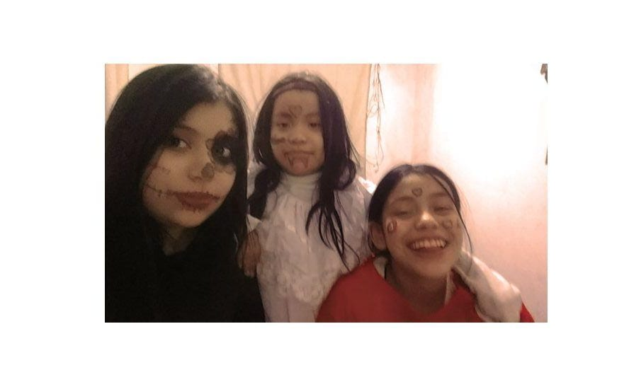
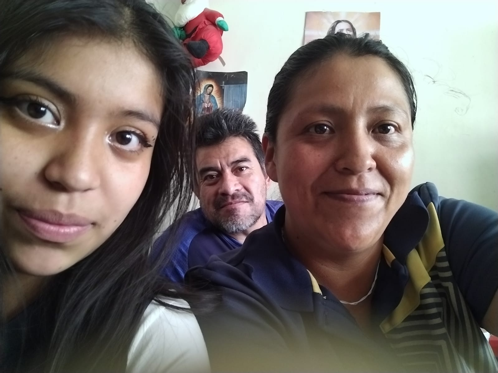

Mi familia se conforma por mi madre Rocio Yanet Eslava Alba, mi padre Jaime Sánchez Hernandez mis dos hermanas, Mariana Sánchez Eslava y Sofia Natalia Sanchez Eslava.
Mi familia es una parte bastante importante en mi vida, empezando por mis hermanas, ellas son las personas más importantes para mi y yo haria cualquier cosa por ellas

Mis primos tambien son una parte bastante importante en mi vida, yo soy de las mayores, solo mi primo Fernando es más grande que yo, fuera de eso podria decir que yo cuide a mis primos y estuve con ellos. Ultimamente mis relación con ellos es mejor, nos llevamos bastente bien y eso me gusta mucho porque paso muy buenos momentos con ellos, más con mi primo Fernando y Luis.
Mis papás tambien son una parte esencial en mi vida ellos me han cuidado, me han enseñado muchas cosas, hay veces en las que no estoy de acuerdo con lo que me dicen pero entiendo que todo lo que hacen es para que este bien y la mayor parte de los casos lo acepto, aunque a veces me cuesta un poco.

Mi Tia Monica tambien es una persona bastante esencial en mi vida, de hecho podria decir que a ella la considero como mi segunda mamá, ya que desde pequeña siempre estuvo comigo y me cuidaba. Recuerdo una vez que me estaba cuidando y me iba a llevar a la escuela, esa vez se nos hizo tarde y cuando llegamos a la escuela nos dimos cuenta de que no llevaba mi botella de agua y esa vez ella no llevaba dinero asi que me compro una coquita de $5 pesos, porque era lo unico que llevaba.